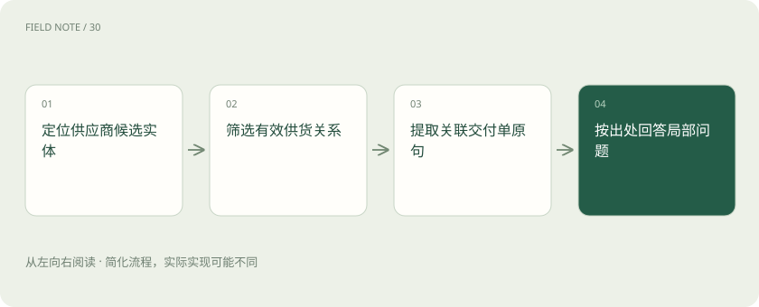
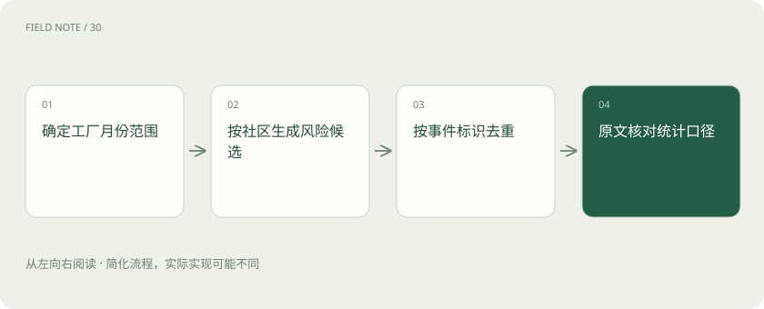

先读哪些知识
先用一个类比理解
类比只帮助建立直觉，不等同于技术的完整机制。
一图看懂
先识别问题尺度
质量负责人问“今年各工厂反复出现的交付风险是什么”。它要求跨全语料归纳，不能用最相似的五份事故单代表所有工厂。先写清范围、时间、覆盖单位和输出要求，再决定检索路线。全局问题仍可能受索引缺失影响，全文库索引不等于所有现实事件。
先要求输出风险类别、涉及工厂、时间窗口和例外，才能判断回答是否覆盖目标。若问题转为“某份合同第三条写什么”，就应切到直接文本证据，而非继续全局总结。
四种路线的含义
核对当日 Microsoft 文档，Local 面向具体实体及其相关图信息与文本，Global 利用社区报告组织全局归纳，DRIFT 结合社区背景和后续局部探索，Basic 提供基础向量检索路径。这是该项目当前查询分类，不代表所有 graph RAG 产品都提供同名接口。
路线并非质量高低的阶梯。Basic 在精确条款问答上可能更经济；Global 的优势目标是跨资料聚合。这里采用文档概念分类，具体参数和接口须以所用发行版本为准。
局部查询走通证据
问“供应商甲与二厂延期有什么联系”，先定位甲的实体候选，再取相关关系和文本单元。若存在两个同名主体，先消歧再展开邻接信息。答案需要合同编号和交付单支持；邻接边只能指示去哪里找，边多并不意味着因果关系更强。
扩展邻居时可限制关系类型与有效期，避免把甲的历史子公司全部塞进上下文。若相关交付事件在第二跳，需明确为什么允许继续展开，以及哪些无关分支被舍弃。
图解：Local查询的证据路径

全局查询完整示例
对全年事故库先明确纳入一月至十二月的有效记录，再让社区报告提供风险候选，例如物料短缺、运输延误与验收返工。随后回到各类代表记录核对时间与工厂。若只有三厂数据，报告应说“已收录三厂”，不能扩张成集团整体情况。
可先做工厂乘月份的覆盖表，标出无记录单元，再给每个风险类别配两种不同记录类型。这样读者能区分“没有发现事故”与“这个工厂根本没有材料”两种状态。
DRIFT 的探索边界
DRIFT 从相关社区背景产生初步理解和后续问题，再用局部检索补充细节。它适合主题较宽而仍需细节的问题，但后续问题可能沿着最显眼的社区越走越窄。应记录已经覆盖的风险类别，给探索深度与预算上限，并把尚未验证的问题留在结论之外。
例如首次回答提到运输和仓储，后续问题只追问运输，就应检查是否遗漏仓储的独立证据。探索生成的问题也需要去重，不可把措辞变化算成研究范围扩大。
引用需要逐层核验
社区报告里的判断是派生材料，不能仅凭报告编号就断言原始事实已核实。沿报告到关系、文本单元、文档版本追踪，确认引用确实支持句子中的数量、范围与时间。若只有概述支持，标明概述层证据并限制结论强度，不能制造不存在的原文页码。
数量主张尤其危险：三条关系可能来自同一次事故的三份文档。计算事件数之前按事件标识去重，核对报告口径；引用三个文件并不自动等于三个独立事故。
成本与基准设计
对同一组实体问题、全局问题和混合问题比较 Basic、Local、Global、DRIFT。记录答案覆盖、证据准确、漏掉的例外、延迟、调用费用和索引开销。资源密集的全局归纳可能改善覆盖，却不保证每种事实题更准确；平均得分还会掩盖局部题退步。
小型评测可按题型分别报分位延迟和单题费用，避免全局问题的长尾被平均值吞没。索引预计算支出也应摊入总成本，否则只比较查询费会偏向重预处理方案。
图解：全局统计的防重

诊断错误归纳
若系统说所有延期都因运输，先查是否只有运输社区进入上下文，再看报告是否遗漏返工，最后检查原始记录是否未入库。三种故障分别属于查询覆盖、摘要损失和数据缺失。不能一看到结论错就换模型，更不能靠扩大输出篇幅掩盖覆盖空洞。
最小定位实验是固定索引和问题，仅替换进入答案的社区集合。如果风险类别恢复，优先处理检索覆盖；若仍缺返工，则打开报告检查摘要，再决定是否回到抽取层。
放在一起对比
| 对象或路线 | 处理依据 | 适用边界或检查点 |
|---|---|---|
| Basic | 精确条款问题 | 向量相关切片 |
| Local | 特定供应商关联 | 实体关系与原文 |
| Global | 全年风险主题 | 社区报告聚合 |
| DRIFT | 主题背景加细节 | 报告引导局部探索 |
放进真实场景
假设库中东厂十份运输事故、西厂两份返工记录。Basic只命中运输时，不能说全年主要问题只有运输；先检查全局类别覆盖，再回查西厂的返工证据。
别踩这个误区
想一想
Global回答为什么仍要回到原始事件？
社区报告提供聚合线索，但可能压缩例外并重复表达同一事故。事件数量、时间与因果主张仍应由原始记录核验。
关联阅读
资料与边界
本文为原创知识讲解。类比和图示经过简化；示例数字不代表实测或报价。整理日期：2026-11-05。文末列出对应技术的原始资料，具体功能与版本支持请以原文为准。